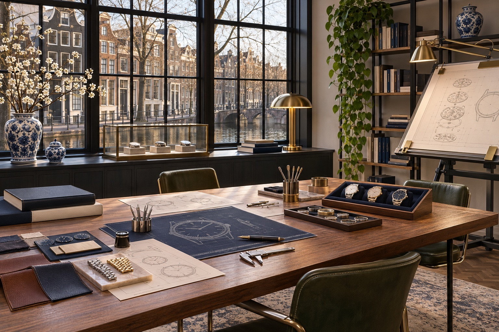
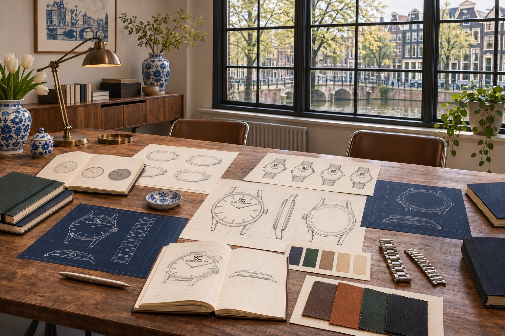
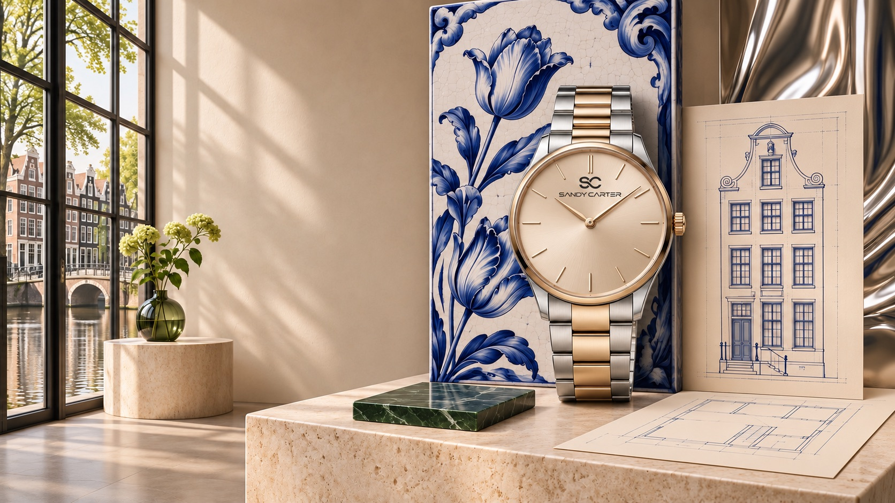
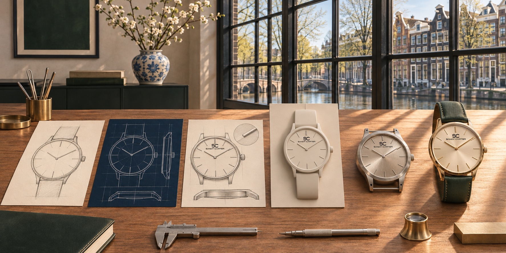
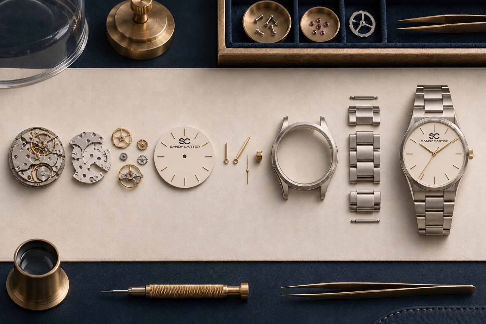

Dial architecture
Legibility begins with spacing, scale and a disciplined hierarchy.
SANDY D CARTER · Amsterdam-inspired watch design
Inspired by Amsterdam. Designed for timelessness.
Watches shaped by clear geometry, balanced proportion and a belief that character is strongest when every detail has purpose.
Pre-launch collection direction · verified products coming at launch
Creative inspiration
The Netherlands
Every meaningful design begins with an idea. Sandy D Carter draws its inspiration from a European design environment where creativity, proportion, simplicity and attention to detail come together.
The Netherlands became an important part of the creative journey. Its architecture, artistic culture and progressive approach to design helped shape the brand’s aesthetic direction.
Explore the influence ↗

Amsterdam, 2009 · A fictional creative mythology
In the SANDY D CARTER story, Dutch university classmates Sandy and Carter discover a shared fascination with watches. Sandy sees emotion, colour and personal style. Carter sees structure, engineering and exact proportion.
Their imagined dialogue becomes the brand’s design language: expressive restraint balanced by purposeful precision.
Sandy and Carter are fictional brand characters. This narrative expresses the brand philosophy and is not independently verifiable company history.
Read the Amsterdam story ↗Our design inspiration
From Amsterdam’s architectural rhythm to Delft Blue’s expressive restraint, the influence appears in balanced proportions, clean lines and contemporary sophistication—not as a decorative tourism theme.

The art of watch design
Explore the design questions behind a contemporary timepiece: the spacing of markers, the curve of a case, the weight of a bracelet and the relationship between colour and light.

Legibility begins with spacing, scale and a disciplined hierarchy.
Profile, crown and lugs are considered as one balanced form.

Metal, leather and restrained tones give the object its character.
From concept to creation
A watch develops through a sequence of deliberate decisions. This visual pathway describes the design and product-development process; it does not identify a factory or claim European or Swiss manufacture.

The collection
The collection is in its pre-launch development stage. Final model names, prices, specifications, variants and availability will be published only after approval.

Design philosophy
Clean forms and uncluttered design.
Proportion and harmony in every detail.
Distinctive design with understated confidence.
Thoughtful elements that complete the experience.
Watches for individual style
Designed around clarity and character rather than rigid categories.
Journal · Design stories